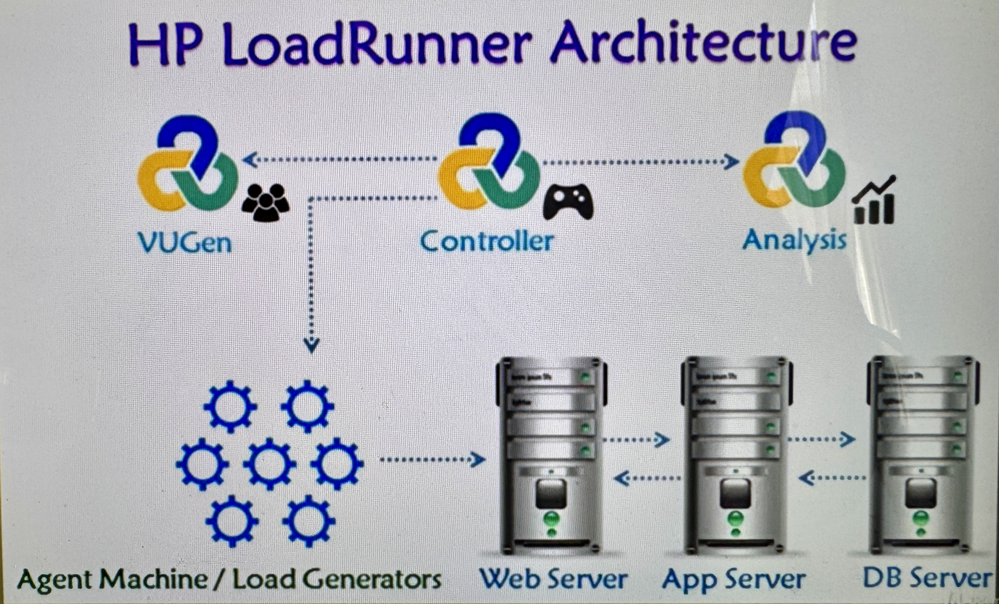

🧩
設計可重複的虛擬使用者腳本
能使用 VUGen 錄製與回放腳本，拆分 actions，建立 transactions，加入文字與圖片檢查，確保腳本能代表真實操作流程。
我能運用 LoadRunner 建立一套效能工程方法：從使用者交易建模、腳本錄製與調校、 負載場景設計，到監控指標與報表分析，最後回到架構決策與容量規劃。
實作案例一個完整的效能測試設計案例：把 SLA 轉成 workload model、VUGen transactions、Controller scenario、 monitoring、dry run、steady-state 分析與 pass/fail 報告。
查看完整案例 →
這張架構圖很能代表我的理解：VUGen 負責建立虛擬使用者腳本，Controller 負責組織壓力場景與負載產生器， Analysis 負責將測試結果轉成可判讀的效能洞察。這些元件一起模擬使用者流量，對 Web、Application 與 Database 層進行壓力驗證，最後回到架構調校與容量規劃。
我實際操作過 LoadRunner 的核心流程，因此可以從「怎麼測」進一步思考「測出來的數據對架構代表什麼」。
能使用 VUGen 錄製與回放腳本，拆分 actions，建立 transactions，加入文字與圖片檢查，確保腳本能代表真實操作流程。
能進行 parameterization、data driven testing，以及手動/自動 correlation，處理 session id、token、動態欄位等常見問題。
理解 run logic、think time、pacing、recording settings 與 runtime settings，讓測試節奏更接近真實使用者行為。
能建立 manual 與 goal-oriented scenario，設計 basic schedule 與 real-world schedule，並加入 monitors / measurements。
能使用 Analysis 報表、graphs、filter 與 granularity 觀察 response time、throughput、error pattern 與資源瓶頸。
能使用 SLA 與 Rendezvous Point，驗證系統是否滿足服務品質要求，並模擬尖峰同步交易壓力。
對企業架構師而言，效能測試不是按下「開始測試」而已，而是把業務情境、系統架構、基礎設施與容量規劃串在一起。
先定義登入、查詢、下單、批次處理或資料擷取等關鍵流程，再用 transaction 把每段時間與成功率量化。
用 think time、pacing、使用者增長曲線與排程設計，避免做出不符合業務情境的「假壓力」。
在 Controller 中加入監控指標，並把結果和應用、資料庫、主機、網路與雲端資源指標一起判讀。
將 response time、throughput、error rate、SLA 達成率整理成可溝通的結果，支援容量規劃、調校與上線決策。
透過 load scenario、ramp-up、real-world schedule 與 SLA，建立上線前的效能驗證基準。
結合 transaction response time、monitoring measurements 與 Analysis 圖表，縮小瓶頸範圍。
用不同使用者量與交易量測試，觀察 throughput 與 response time 的關係，支援容量規劃。
用測試前後的數據比較，驗證調校、快取、資料庫改動或基礎設施擴充是否有效。